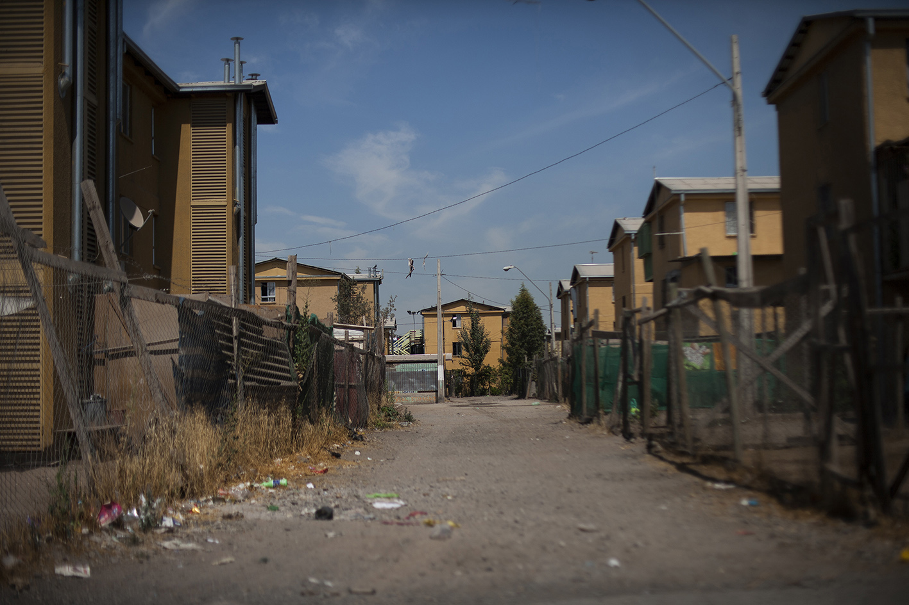

Gentrificación y segregación, son fenómenos urbanos de diferenciación social y espacial complejos y controversiales a escala global. Santiago de Chile, al igual que otras megaciudades latinoamericanas, experimentó una rápida expansión urbana con diferenciación social. Específicamente, en las últimas décadas, la gestión inmobiliaria en esta ciudad está protagonizando transformaciones urbanas en el habitar, tanto el pericentro como la periferia, generando una cercanía geográfica aparente entre habitantes pobres y mejor situados. Sin embargo, estas mutaciones socioespaciales parecen perder de vista la forma urbana y sus estructuras de sentido para la vida ciudadana. ¿Qué efectos tipológicos y topológicos, se pueden reconocer en el pericentro y en la periferia producto de estas transformaciones? A partir de un análisis contextual, teórico y empírico en dos barrios en Santiago de Chile –El Llano Subercaseaux pericentral histórico, y Parque Violeta Cousiño periférico “emergente”– se examinan estos procesos de transformación socioespacial. Los hallazgos de este análisis –sistematizados por medio de una matriz topológica y tipológica– permiten establecer distinciones que muestran tendencias a latino gentrifi cación pericentral y polarización periférica.
 Fotografía del libro “Living periferia” de Alejandro OlivaresInzulza Contardo, J. y Galleguillos, X. (2014).Latino gentrificación y polarización: transformaciones socioespaciales en barrios pericentrales y periféricos de Santiago, Chile. Disponible en En línea